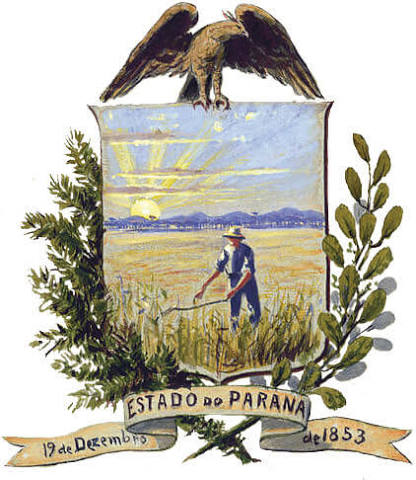

A erva-mate foi o motor econômico e a principal inspiração estética da arte paranaense, unindo riqueza e
identidade cultural. No fim do século XIX, o auge de seu ciclo econômico financiou as artes e atraiu
pintores como Alfredo Andersen, que registrou em telas realistas o trabalho e a paisagem dos ervais nativos.
Já nas décadas de 1920 e 1930, com o Movimento Paranista, a planta deixou de ser mero cenário para virar um
símbolo oficial de identidade regional: suas folhas e ramos foram estilizados pelo escultor João Turin e
outros artistas, passando a adornar monumentos, fachadas arquitetônicas, móveis, portões de ferro e rótulos
de exportação, imortalizando o mate como o grande ícone visual do Paraná.
A erva-mate na Arte Paranaense
Se você é do time que não passa um dia sem um bom chimarrão, adora um tereré trincando de gelado ou
simplesmente quer descobrir os superbenefícios da erva-mate para a saúde, você precisa conhecer o nosso
site! Nós criamos o espaço definitivo para os apaixonados por essa planta que é o verdadeiro 'ouro
verde' da nossa cultura. Lá você vai encontrar desde curiosidades históricas fascinantes até as melhores
dicas e produtos para elevar o nível do seu mate diário. Não fique de fora dessa roda: acesse o nosso
site pelo link e venha descobrir tudo o que a erva-mate tem a oferecer!".

https://especiais.gazetadopovo.com.br/erva-mate/
Por que a erva-mate é tão importante para o contexto histoŕico no paraná?
A erva-mate é o pilar central da história do Paraná porque funcionou como o motor definitivo de sua
emancipação política e de sua modernização socioeconômica. No século XIX, a força financeira gerada pela
produção e exportação da planta deu à antiga "Comarca de Curitiba" a relevância e o poder político
necessários para se desligar da Província de São Paulo, resultando na fundação da Província do Paraná em
1853.
A erva-mate e sua importancia:
A erva-mate é uma das plantas mais importantes da América do Sul por ser um motor econômico, cultural e
ecológico. Cultivada intensamente no Brasil, Argentina e Paraguai, ela sustenta milhares de famílias de
pequenos agricultores e abastece um mercado global em expansão, que utiliza a planta em chás,
energéticos e cosméticos. Além do forte impacto financeiro, o mate é um poderoso elo cultural,
transformando o hábito do chimarrão e do tereré em símbolos máximos de socialização e hospitalidade na
nossa região. Para completar, a erva-mate é uma grande aliada da sustentabilidade, pois o seu cultivo
tradicional exige a sombra das florestas nativas, gerando renda enquanto preserva a Mata de Araucárias e
a biodiversidade local.
O arrependimento científico: Em 1820, o botânico francês Auguste de Saint-Hilaire batizou a planta
cientificamente como Ilex paraguariensis. Pouco tempo depois, ao viajar pelo Paraná, ele percebeu
que era no solo paranaense que a árvore crescia com a maior exuberância, qualidade e abundância do
planeta. O cientista confessou em seus registros que se arrependeu amargamente do nome, pois achava
que o Paraná é que merecia a homenagem no batismo da erva.
curiosidade 2
O arrependimento científico: Em 1820, o botânico francês Auguste de Saint-Hilaire batizou a planta
cientificamente como Ilex paraguariensis. Pouco tempo depois, ao viajar pelo Paraná, ele percebeu
que era no solo paranaense que a árvore crescia com a maior exuberância, qualidade e abundância do
planeta. O cientista confessou em seus registros que se arrependeu amargamente do nome, pois achava
que o Paraná é que merecia a homenagem no batismo da erva.